fixed_phase_repeat_20261022_r4
U/C 同相位同曝光重复参考（区分测量重复性与模型误差）
说明：U 分支为平相位基线（panel_phase≈0 属预期），C 分支为平相位 + 菲涅尔聚焦补偿；两者同曝光重复采集。
每个卡片为「SLM 面板总相位（展开, rad）｜相位包裹图（mod 2π）｜CCD 远场光斑（平均帧 log 缩放）」三联图。
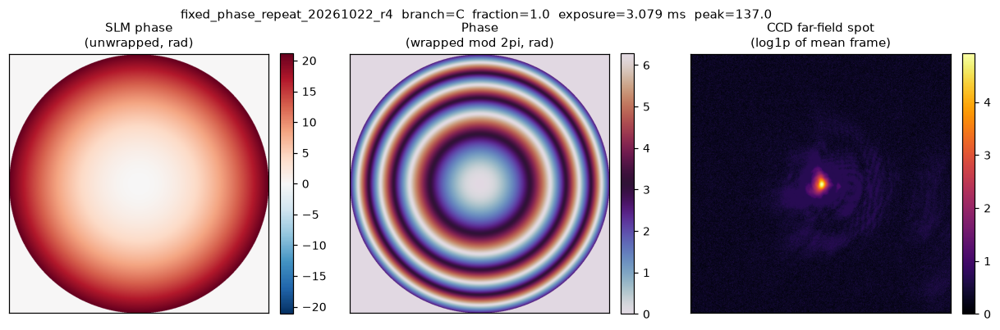
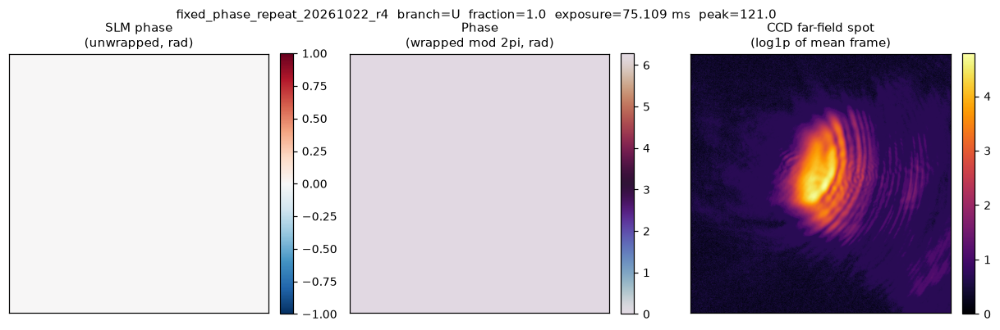
response_bias_20261022_r2
多曝光逐帧响应偏置补测（含超时组）
每个卡片为「SLM 面板总相位（展开, rad）｜相位包裹图（mod 2π）｜CCD 远场光斑（平均帧 log 缩放）」三联图。
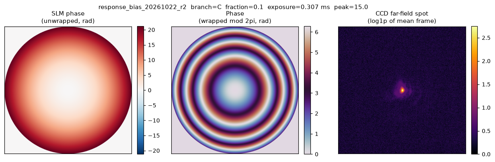
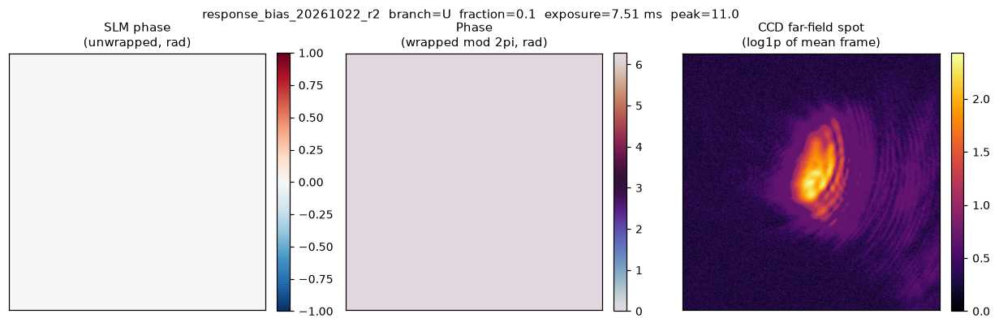
response_repeat_20261022_r3
U 分支固定曝光重复采集（短时响应稳定性）
每个卡片为「SLM 面板总相位（展开, rad）｜相位包裹图（mod 2π）｜CCD 远场光斑（平均帧 log 缩放）」三联图。
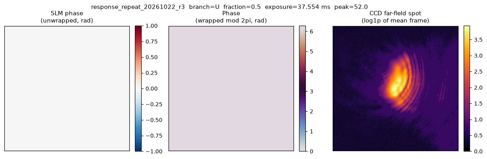
sampling_audit_20261022_r1
传播采样 / 像素积分 / 有效展宽诊断（8 个模糊步）。diagnostic_iterations.pkl 记录每一步的训练得分、增益与背景。
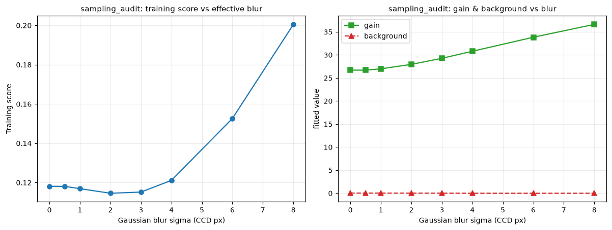
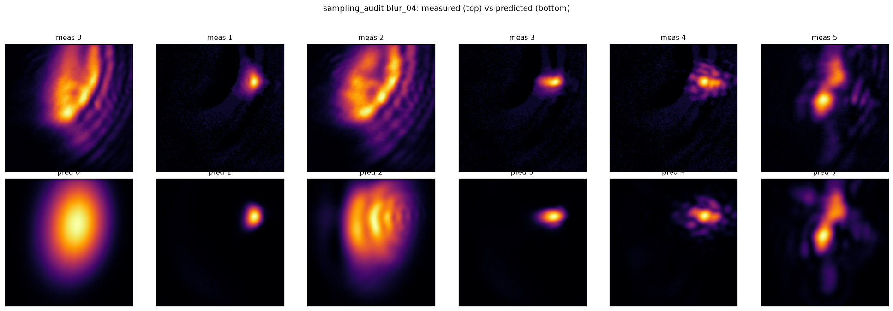
radiometry_audit_20261022_r2
逐像素仿射截距与展宽/模板对照（14 个阶段：单分量展宽 + 非相干混合模板）。diagnostic_iterations.pkl 记录训练得分与混合系数。
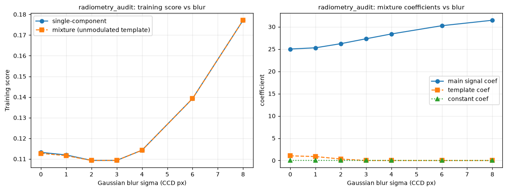
uniformity_refit_20261022_r1
联合强度 / CV 目标的物理预测模型微调，共 151 个迭代快照（含初值）。iterations.pkl 记录 loss / nmse / cv_mse 与全部物理参数。
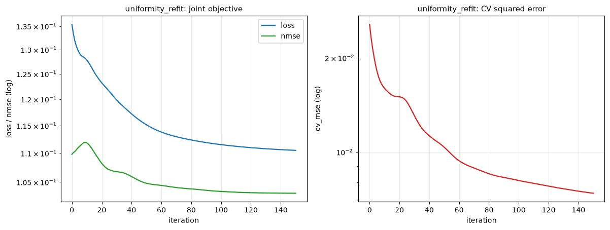
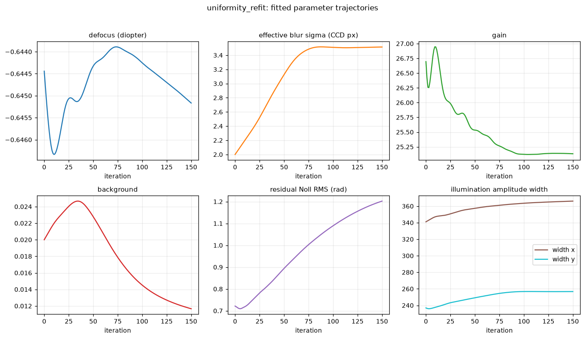
下方为代表性探针的「SLM 相位（展开）｜相位包裹｜CCD 实测 ｜模型预测」四联图（log 缩放）。
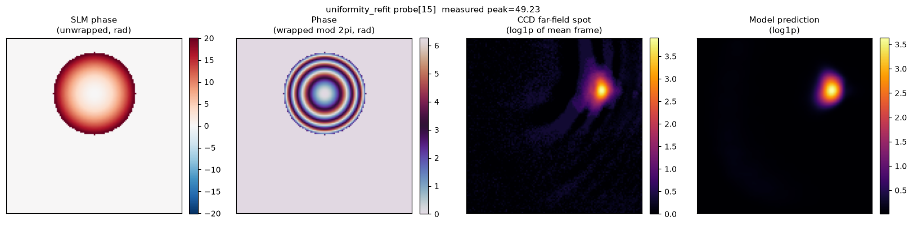
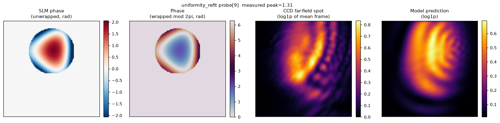